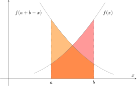
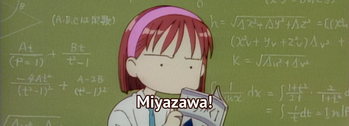

This section includes some of the more useful tricks I've learned in my time discussing maths with friends. There's also a section for sets of notes I made at university.
One of my favourite tools to use when I see a tricky integral is slightly unconventional and involves reflecting the function in question about the midpoint of the given interval of integration. More precisely, say $f$ is an integrable function over $[a,b]$. Then, via the substitution $x \mapsto a+b-x$: This is illustrated in the image below. Since the graph is simply a reflection over the midpoint, the area (and thus integral) does not change: Reflection Across a Midpoint
Example
Let $n \in \mathbb{N}$ and calculate the following integral:
$$ I = \int_{0}^{\pi/2} \dfrac{\cos^{n}(x)}{\cos^{n}(x)+\sin^{n}(x)} \text{ d}x $$
Using the substitution $x \mapsto a+b-x = \pi/2 - x$, our integral transforms to:
$$ I = \int_{0}^{\pi/2} \dfrac{\sin^{n}(x)}{\sin^{n}(x)+\cos^{n}(x)} \text{ d}x $$
Adding the two together gives:
$$ 2I = \int_{0}^{\pi/2} \dfrac{\sin^{n}(x)+\cos^{n}(x)}{\sin^{n}(x)+\cos^{n}(x)} \text{ d}x = \int_{0}^{\pi/2} \text{d}x. $$
Thus, our seemingly complicated integral is equal to $\pi/4$.
If I'm ever given an integral of a rational expression of trigonometric functions and all my initial attempts fail, my fall-back is usually to transform the problem into one of rational expressions of polynomials. To do so, one can invoke the Weierstrass substitution $t = \tan(\theta/2)$: The right-angled triangle above and appropriate double-angle formulae can be used to express trigonometric terms as functions of $t$ and the differential form transforms according to the following rule: Weierstrass Substitution
Sometimes these things appear in anime too.
The next integral serves as an example of two methods of integration. We'll begin with explaining a method popularised by Richard Feynman: By introducing an extra parameter into an integral, under certain conditions, it's possible to solve the currently intractable integral as a special case of a more general problem. Let $(X,\mu)$ be a measurable space, $a < b$ with $a, b \in \overline{\mathbb{R}}$ and $f \colon (a,b) \times X \to \overline{\mathbb{R}}$ be such that What this theorem essentially says is that if all your functions are 'nice enough' and the partial derivative of $f$ w.r.t. $t$ is bounded (aka the growth of the function as $t$ changes is also well-behaved), then we can interchange our integral and derivative. To see it in practice, let's consider a more general version of $J$: For me, the guess of $f(t,x)$ is usually educated by whether I can cancel terms out after taking a partial derivative. To that end:Differentiating Under the Integral Sign
Theorem (Interchanging Derivative & Integral)
Then $F$ is differentiable on $(a,b)$ and $$ \displaystyle F'(t) = \int \dfrac{\partial f(t,x)}{\partial t} \text{ d}\mu(x). $$
Noticing that $J(1) = 0$ means that our constant of integration is $0$. Now, substituting in $t = 3$ returns our original integral.
$$ \therefore \ J(3) = \int_{0}^{\infty} \dfrac{e^{3x} - e^{x}}{x(e^{3x}+1)(e^{x}+1)} \text{ d}x = \dfrac{1}{2} \log(3). $$When doing multivariable calculus, sometimes we'd like to swap the order of integration. We are justified in doing so with the help of a theorem proved by Fubini. We can use our previous integral $J$ to see this in action. I'll use $\leftrightarrow$ to denote the equality where the order of integration is swapped and $\text{FTC}$ is where we invoke the Fundamental Theorem of Calculus: Two methods for the price of one integral. 👏🏼Double Integrals